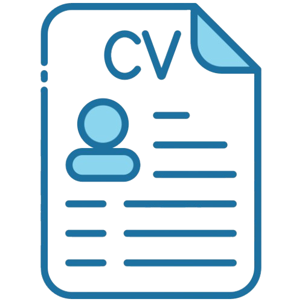
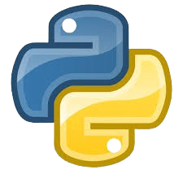

Mon CVJe suis étudiante en 3ème année en Génie Logiciel & Systèmes d'Information à ESGITECH. Mon parcours atypique allie la rigueur scientifique de la biotechnologie, une solide expérience en relation client et la logique du développement logiciel.
Mon Parcours
De la Science à l'Industrie
Avant ma reconversion, j’ai obtenu une licence en Biotechnologie Pharmaceutique et un Master professionnel en Développement Industriel de Produits de Santé à l’ISBST. J'ai réalisé plusieurs stages au sein de laboratoires pharmaceutiques et médicaux, où j'ai acquis une solide culture de la rigueur et de la conformité.
Solide Base Professionnelle
En parallèle de mon cursus scientifique, mon parcours de 11 ans chez Teleperformance m'a permis de maîtriser la gestion de situations complexes et la résolution de problèmes techniques pour des leaders du secteur (Orange, SFR, Bouygues). Cette expérience m'a dotée d'une grande capacité d'adaptation, une qualité essentielle pour évoluer dans l'écosystème agile du Génie Logiciel.
Vers le Génie Logiciel
Passionnée par les nouvelles technologies, j'ai suivi en 2024 une formation intensive en développement Fullstack à GOMYCODE, ce qui m’a permis de renforcer mes compétences techniques et de confirmer mon orientation vers le génie logiciel.
Grâce à mon parcours en santé, je maîtrise des méthodologies applicables au monde de l'entreprise et du logiciel :
Mon parcours de 11 ans chez Teleperformance vient compléter cette rigueur par des compétences humaines essentielles en ingénierie :
HTML / CSS
Bon niveau, en évolution continue
JavaScript
Bonne base, progression active
SQL / NoSQL
Maîtrise des bases de données

Python / C
Notions solides